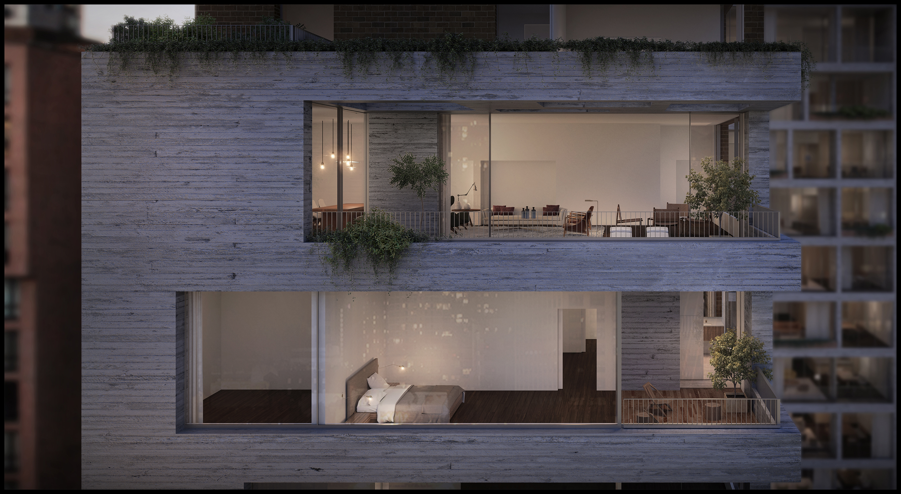
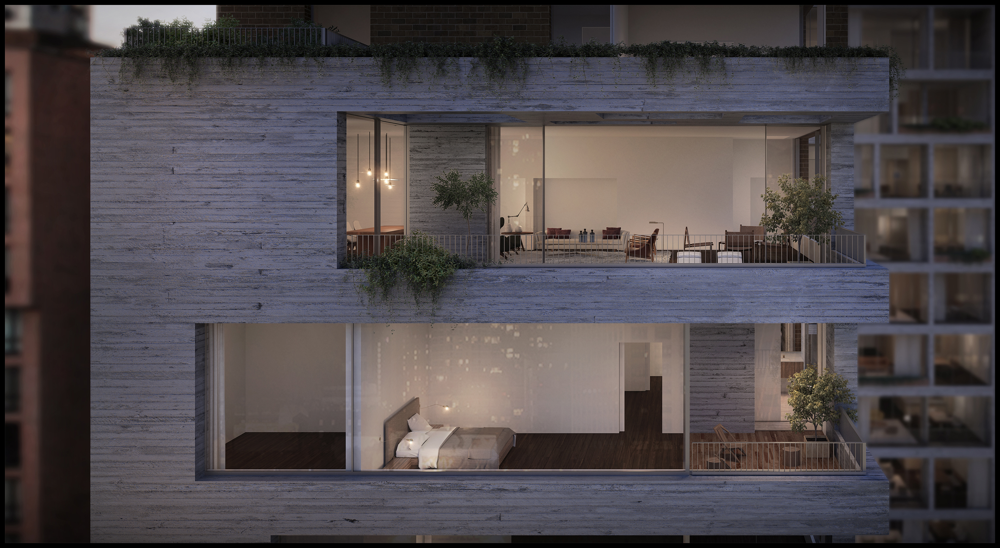
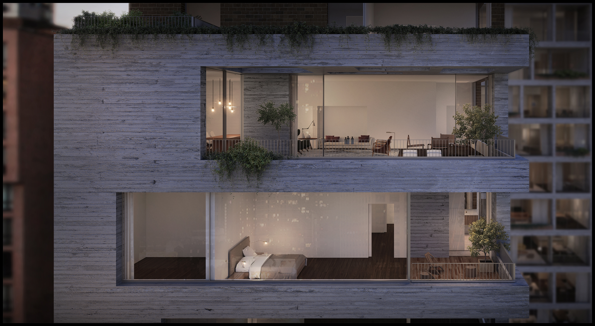

Collaborating with Brazilian architect Isay Weinfeld on Jardim, a new luxury residence located in the thriving corridor of development alongside New York City's Highline. Fueled by the success of the elevated park and greenway, the surrounding West Chelsea neighborhood has been transformed into a portfolio of new work by the world’s leading architects, and we are enthusiastic to keep company with this venerated group. Jardim boasts a sultry oasis of terraced multi-level gardens, flowering trees, and a stone spiral staircase which will connect the lower reserved sections of the garden to the upper more spacious areas. The complex consists of two adjacent eleven-story buildings with a total of 36 units that range from one to four bedrooms. The towers feature indoor and outdoor living areas—both public and private—with balconies and a shared courtyard nestled within the development. The garden-inspired design continues from exterior to interior, where floor to ceiling windows stretch across the walls, opening the interiors up generous daylight. Skylights in the terrace allow natural light to filter through to the swimming pool and gymnasium beneath. Interior details and finishes, such as smoked oak floors, with grooved, lighter oak accents help bring together the exterior and interior design elements into an elegant whole. A unique amenity of the project is a private driveway that runs the entire length of the lot between 27th and 28th streets. The driveway also leads to an underground automated residential parking garage designed by ParkPlus, where residents can enter a code, walk out of their vehicle, and the automated service does the rest. Other amenities include a massage room, fitness center, and an indoor pool. At every juncture, Jardim displays a graceful sense of restraint that ushers dramatic tension.
Studio
Mixed Use & Residential
Status
In Construction
Size
118,000 Square Feet
Location
New York, New York
